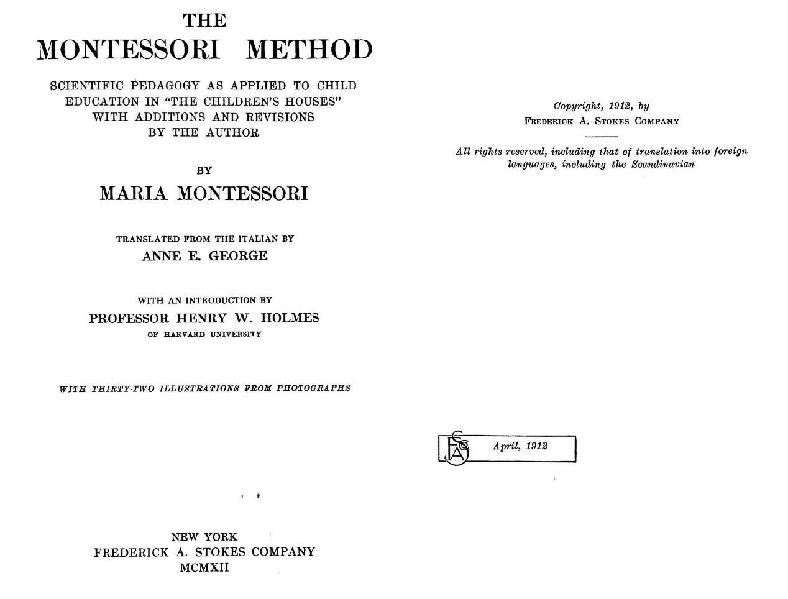
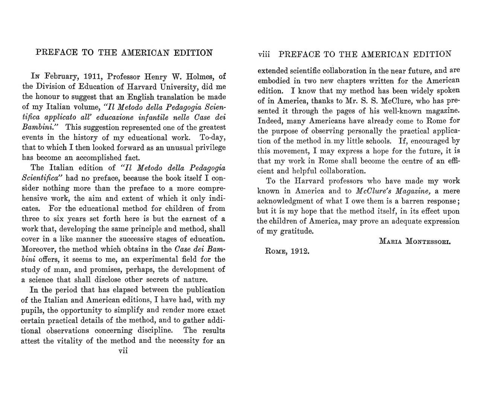
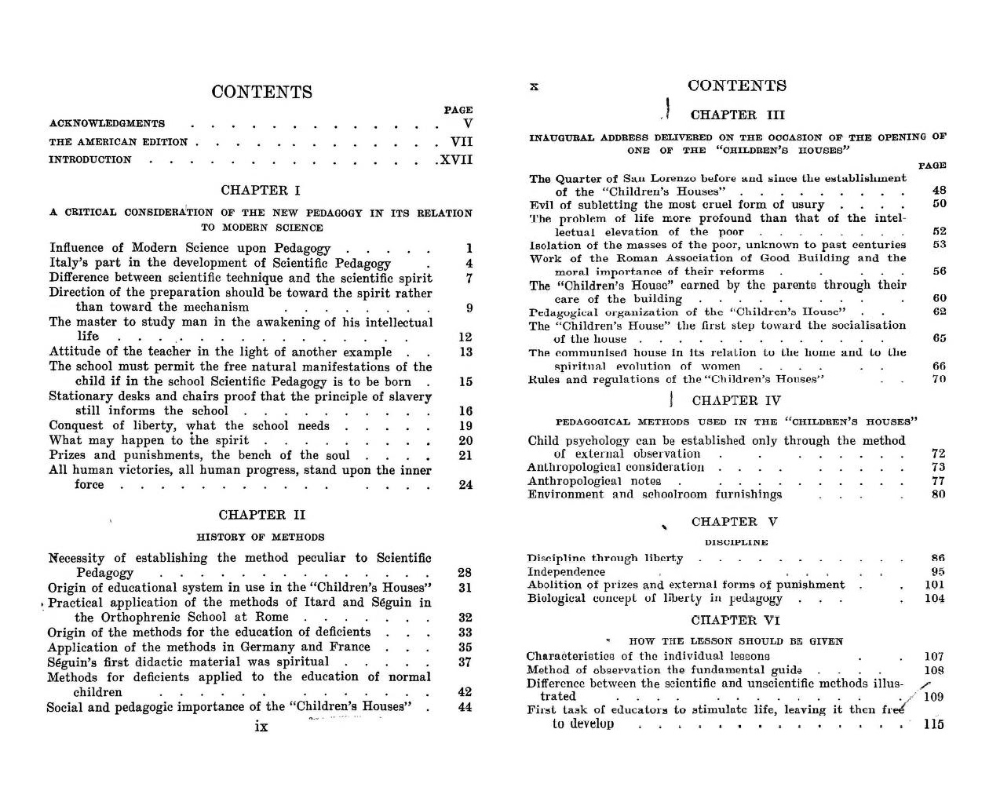
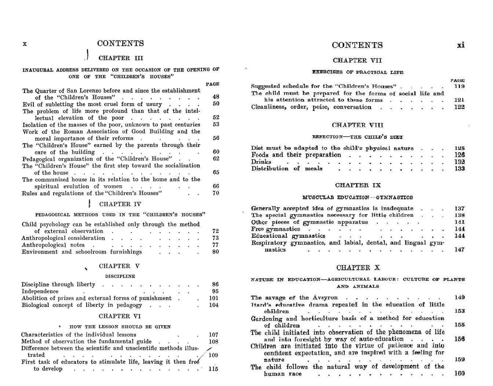
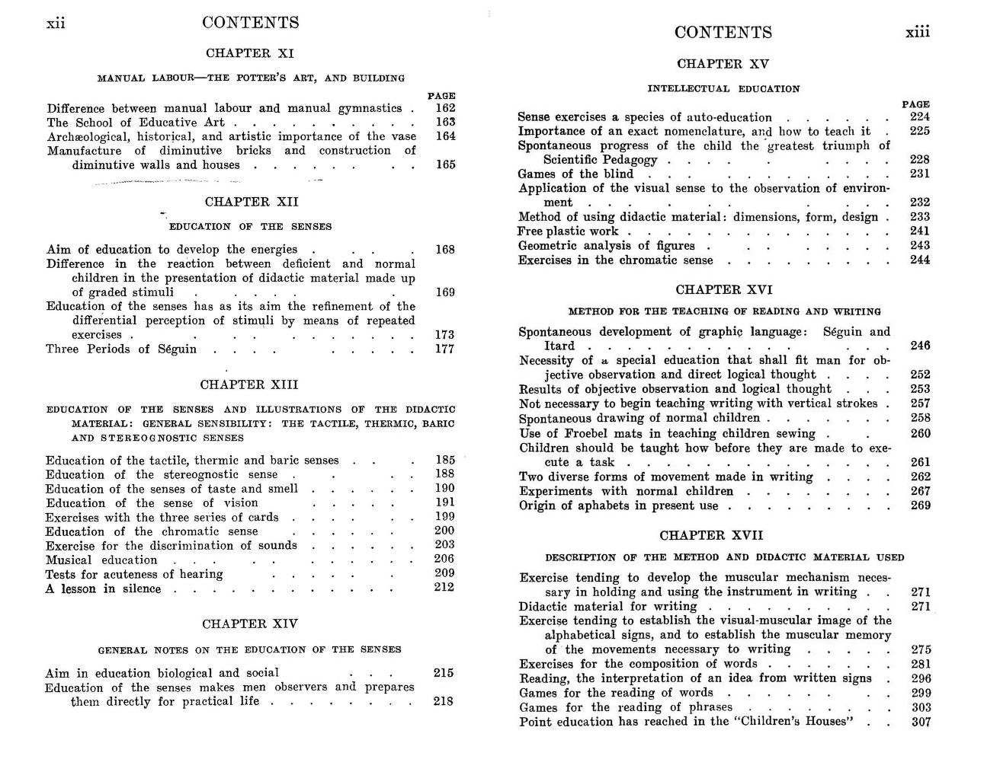
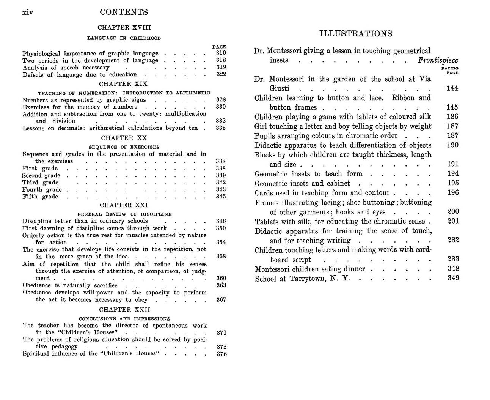

Maria Montessori
Home
(current)
Galleria
Catalogo
Testi
Riviste
Video
Vedi tutto
Storia
Search
The Montessori method
XML/TEI
XML/DC
Filtra la lista per:
Periodo
1896-1902
1902-1909
1909-1952
Oggetto
Testi
Riviste
Video
Tema
Pedagogia
Medicina
Scuola
Condividi:
Per saperne di più:
Esplora l'Opera Nazionale Montessori gestita dal Ministero dell'Istruzione






TITOLO: The Montessori method: scientific pedagogy as applied to child education in "The children's houses" with additions and revisions by the author
EDIZIONE: edizione inglese di Metodo della Pedagogia scientifica (versione italiana 1909)
TIPO DI OGGETTO: libro
TIPO: digitale
AUTORE:
Maria Montessori
VIAF
VEDI PERSONA
Wikipedia
EDITORE: Frederick A. Stokes company
ANNO: 1912
LUOGO DI PUBBLICAZIONE: New York
ISTITUZIONE FORNITRICE:
Cornell University Library
Official Website
NOTE DELL'EDIZIONE: Contiene due nuovi capitoli non presenti nell'edizione originale italiana del 1909
EDIZIONI SUCCESSIVE: 1913, 1926, 1935, 1950
LINGUA: inglese
CLASSIFICAZIONI: Library of Congress - LB775 .M7
NUMERO IDENTIFICATIVO
Open Library
: OL6542070M
IMPAGINAZIONE: 4 p. 1., vii-xlii, 377 p.
ASCOLTA L'AUDIOLIBRO
A colloquio con Maria Montessori
di Archivio Luce Cinecittà
La scuola Montessori
di Archivio Luce Cinecittà
metodo
montessori
pedagogia
maria
opere
case
bambini
applicato
all'educazione
scientifica
storia
infantile
the
scuole
scritti
scoperta
principali
pedagogica
of
montessoriano
limitata
l'autoeducazione
immagini
galleria
esplora
elementari
discovery
child
chiaravalle
cerca
bibliografia
bambino
antropologia
1952